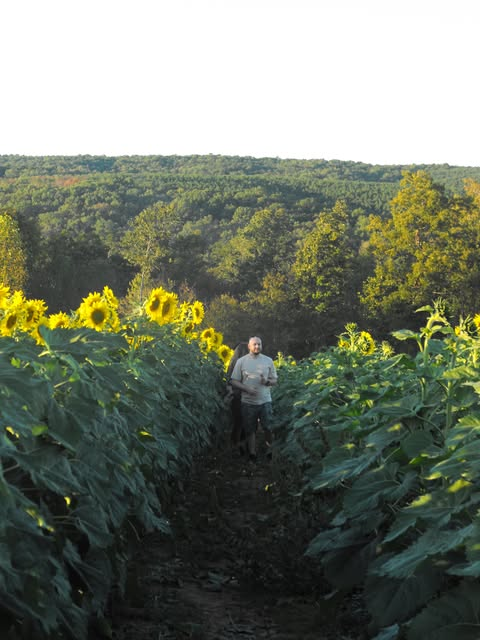
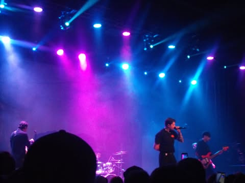

What Inspires Me →
I love creating whether it is painting, taking photos on 35mm camera, or using my hands to make something from scratch. I love it all. I dream to connect people through the magic of story-telling that is art. I want to get more into filming and profesional photography.As long as I live I will keep creating this is my dream. Follow along with me on my journey! Check out my pinterest, to see what inspires me, and listen along to some inspirational songs.
take a look! →
my recent photos →


what I create
- oil and watercolor paintings
- diy concert shirts
- film photography of my travels and loved ones
- and so much more...